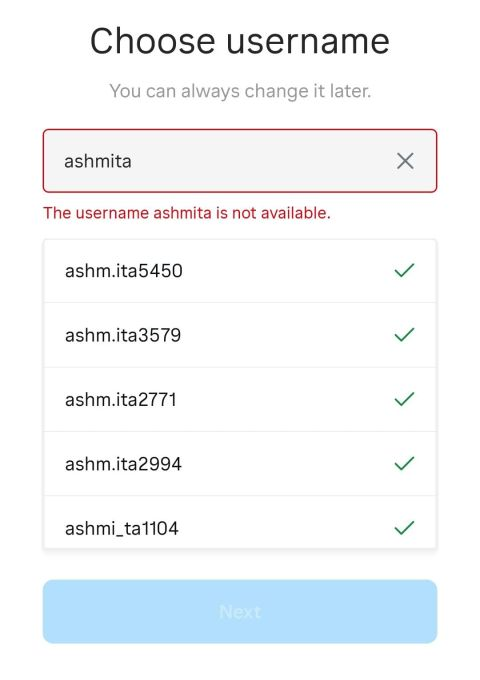

Have you ever wondered how apps like Instagram, X, or Google instantly tell you “𝘂𝘀𝗲𝗿𝗻𝗮𝗺𝗲 𝗮𝗹𝗿𝗲𝗮𝗱𝘆 𝘁𝗮𝗸𝗲𝗻” when you sign up?
Ashmita Pandey · · System Design · Databases
Have you ever wondered how apps like Instagram, X, or Google instantly tell you “𝘂𝘀𝗲𝗿𝗻𝗮𝗺𝗲 𝗮𝗹𝗿𝗲𝗮𝗱𝘆 𝘁𝗮𝗸𝗲𝗻” when you sign up? At first glance, it seems like a simple database query. But at the scale of billions of users across the globe, it’s far from simple. Running a direct query every time would overwhelm databases and slow down the entire system. What actually happens under the hood is a fascinating layered approach: • 𝗖𝗮𝗰𝗵𝗶𝗻𝗴 helps with frequently checked names like “alex” or “john.” • 𝗕𝗹𝗼𝗼𝗺 𝗳𝗶𝗹𝘁𝗲𝗿𝘀 act as a lightning-fast probabilistic check, instantly ruling out most usernames without touching the database. • 𝗗𝗶𝘀𝘁𝗿𝗶𝗯𝘂𝘁𝗲𝗱 𝗱𝗮𝘁𝗮𝗯𝗮𝘀𝗲𝘀 handle the final confirmation when needed. • And to make things smarter, 𝗧𝗿𝗶𝗲𝘀 (Prefix Trees) enable features like autocomplete and instant username suggestions. This combination is what makes the experience feel instant and seamless, even though trillions of possible checks are happening behind the scenes. For me, it’s a reminder that what looks like “just a simple feature” often hides some of the most elegant engineering at scale. What other “small” features do you think hide massive engineering behind the curtain?
